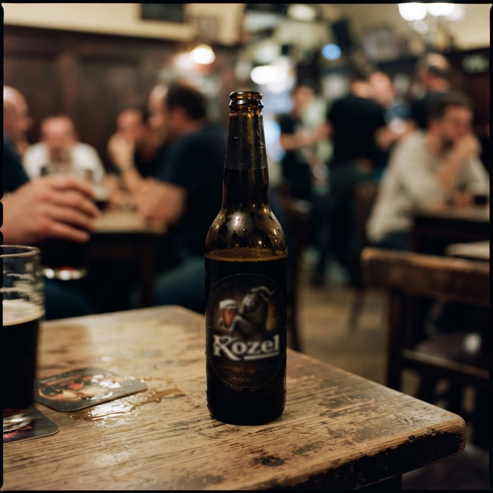
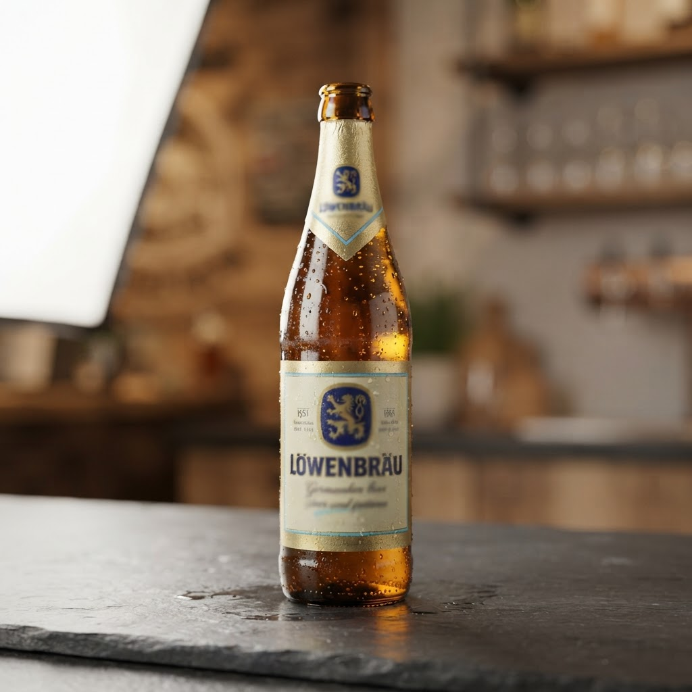

Доставка водки сейчас спб с доставкой в Приморском районе

Жители Янино часто сталкиваются с дефицитом алкогольной продукции в ночное время, когда розничные сети закрыты. Наша служба решает проблему, организуя оперативную логистику напитков прямо к порогу дома.
Особенности сервиса доставка водки сейчас спб с доставкой в Приморском районе
Работа нашей компании строится на строгом соблюдении временных регламентов. Когда вы оформляете заказ, система автоматически передает данные ближайшему курьеру. Мы понимаем специфику ночного трафика в Петербурге, поэтому маршруты выстраиваются с учетом текущей дорожной ситуации. Оперативность — ключевой приоритет: мы гарантируем, что алкоголь будет доставлен в течение одного часа с момента подтверждения заявки. Наши сотрудники обладают навыками быстрой навигации в жилых массивах, что позволяет минимизировать ожидание даже в сложных условиях застройки. Клиент получает товар в заводской упаковке, что подтверждает качество и подлинность продукции. Мы работаем исключительно в правовом поле, обеспечивая конфиденциальность и безопасность каждой сделки. Контроль качества осуществляется на этапе комплектации, поэтому вероятность ошибки или задержки исключена. Профессиональный подход к логистике позволяет нам удерживать статус лидера в сегменте ночной курьерской доставки алкоголя.
Порядок выполнения заказа доставка водки сейчас спб с доставкой в Приморском районе
Процесс взаимодействия с нами предельно упрощен для удобства клиента. Сначала вы оставляете заявку, указывая детали заказа и адрес. Оператор моментально фиксирует информацию и передает её в работу. Далее происходит комплектация: товар извлекается из специализированного хранилища, проверяется целостность акцизных марок и защитных элементов. На третьем этапе курьер приступает к выполнению задачи. Благодаря оптимизированной схеме распределения заказов, водитель выдвигается немедленно после комплектации. Мы осуществляем постоянный мониторинг перемещения курьера, чтобы вы могли быть уверены в соблюдении заявленного часа доставки. Финальный этап — передача продукции клиенту. Мы ценим ваше время, поэтому процедура приема-передачи проходит максимально быстро, без лишних формальностей. Вся логистическая цепочка отлажена до автоматизма, что позволяет нам стабильно достигать целевых показателей скорости в ночное время.
Как гарантируется соблюдение временного интервала в один час?
Каждому курьеру назначается ограниченная зона покрытия, что исключает длительные перемещения через весь город. Система диспетчеризации в реальном времени корректирует маршруты в зависимости от дорожной обстановки. Это позволяет нам уверенно соблюдать установленный часовой регламент. Вывод: Мы обеспечиваем профессиональный подход к ночной логистике, гарантируя скорость и надежность каждого заказа.
Итог
Итог всегда один: назвать следующий шаг покупателю — оформить заказ и получить его в течение часа в своём районе.
Заказать доставку
Оформите заказ сейчас: привезём за 40-60 минут в любой район Петербурга, круглосуточно.
Призыв
Заказ пива на дом спб доставка с доставкой в Приморском районеЯнино стремительно развивается, превращаясь из пригородной зоны в полноценный спальный массив с высокой плотностью населения. Для жителей таких территорий за… Сколько стоит купить водку в спб с доставкой сейчас в Приморском районеЯнино активно развивается, и потребность в качественном сервисе здесь растет пропорционально количеству жилых комплексов. Когда возникает необходимость купит…
Сколько стоит купить водку в спб с доставкой сейчас в Приморском районеЯнино активно развивается, и потребность в качественном сервисе здесь растет пропорционально количеству жилых комплексов. Когда возникает необходимость купит…
Доставка разливного пива на дом спб круглосуточно с доставкой в Приморском районеЯнино активно застраивается, но инфраструктура не всегда поспевает за запросами жителей. Когда после полуночи возникает желание выпить качественного пенного,…